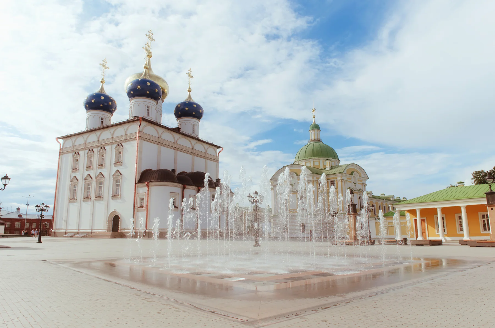
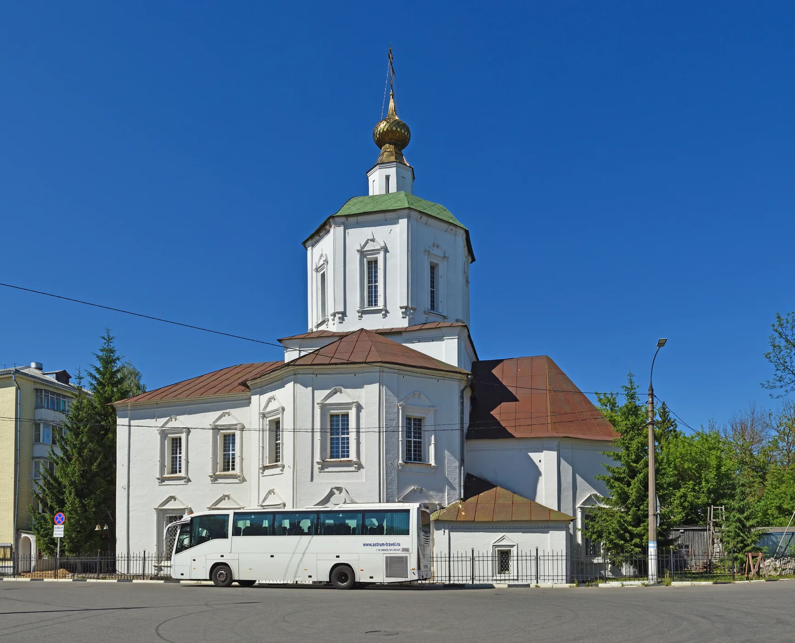

Стёрто
Следы построек, которых больше нет, но без которых нельзя прочитать историю места.
Смотреть архивИнтерактивный путеводитель · Тверь
Исчезнувшие монастыри, живые святыни и истории, спрятанные в привычных улицах.

ТВЕРЬ · ВОЗВРАЩЕНО02 / Живая карта
Открывайте точки
в своём темпе.
Выберите место, чтобы увидеть его историю и фотографию. Маршрутная линия появится только по вашему желанию; карту можно дополнять новыми точками.
Все отмеченные места показаны одновременно; маршрутная линия выключена до вашего выбора и показывает последовательность объектов, а не рассчитанный пешеходный трек. Адресные метки OpenStreetMap — ориентиры, не кадастровые координаты. Перед посещением действующих общин уточняйте правила доступа.
01 / Замысел
Смотреть на город
не только сверху,
но и сквозь время.
У каждого места своя видимая и невидимая история. Одни здания исчезли, другие сохранились лишь частично, третьи вернулись в городскую жизнь.
Следы построек, которых больше нет, но без которых нельзя прочитать историю места.
Смотреть архивГородская повседневность рядом с наследием, которое легко пройти, не заметив.
Найти на картеОбители и общины, чья история продолжается или заново становится видимой.
Открыть местаИсторические даты и спорные версии сопровождаются источниками. Реконструкция обозначается отдельно от подтверждённого факта.
03 / Места
Сохранённые.
Забытые.
Возвращённые.
Здесь собраны основные и дополнительные точки маршрута. Список открыт для новых объектов; выберите любой, чтобы открыть фото, историю, 3D и аудиогид вместе.
Собираем точки маршрута…
04 / Архив
Снимок — тоже
способ вернуться
к месту.
Архивные фотографии не подменяют современный вид. У каждого изображения указаны источник и правовой статус.
05 / Выбранное место
Выберите точку на карте или здесь — история, фотография, 3D и аудиогид обновятся вместе.

Утраченная обитель · сохранившийся собор
Набережная Афанасия Никитина, 1
От большого монастырского ансамбля остался один храм — и он продолжает жить.
Историческая справка появится после выбора храма.
Схематическая форма для знакомства с архитектурой, а не точная историческая реконструкция.
Запись аудиогида для этого места появится позже.
06 / Экскурсии
Выберите день.
Остальное уточним
перед запуском.
Прогулка по слоям города
Здесь появится информация об экскурсиях и способ связи с командой проекта.
Контакты проекта
Перед запуском здесь появятся актуальные контакты команды и расписание экскурсий.
07 / Источники
История требует
точности и
бережности.
Годы основания и адреса в открытых источниках иногда расходятся. В карточках оставлены безопасные формулировки и ссылки на епархии, приходы, научные публикации и органы города. Там, где точные координаты не опубликованы, карта показывает ориентир.